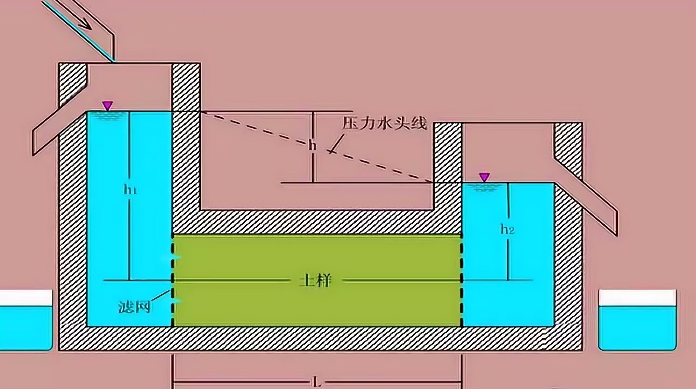
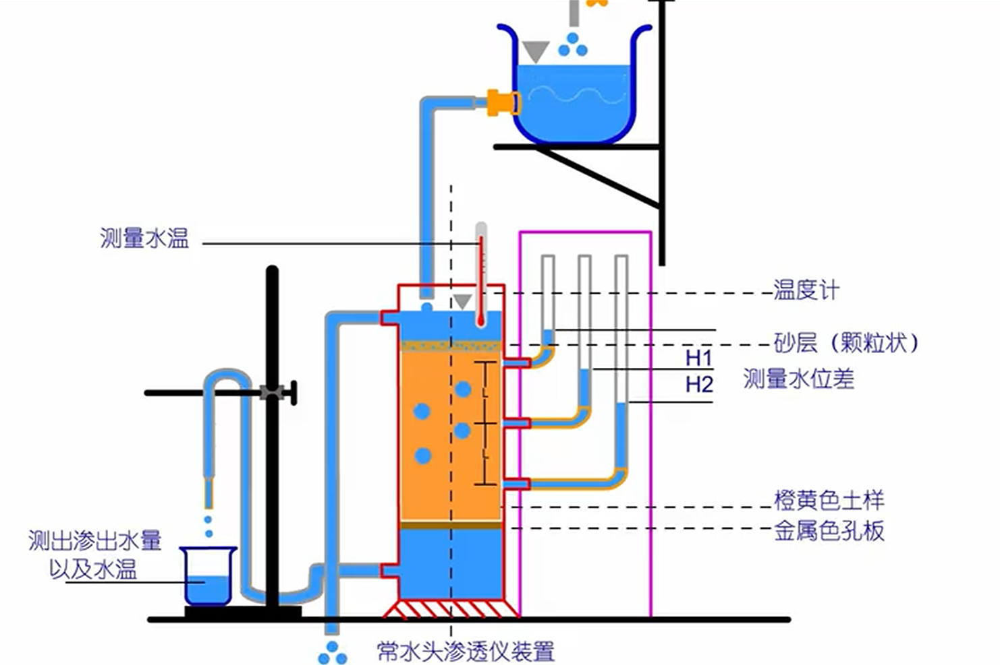
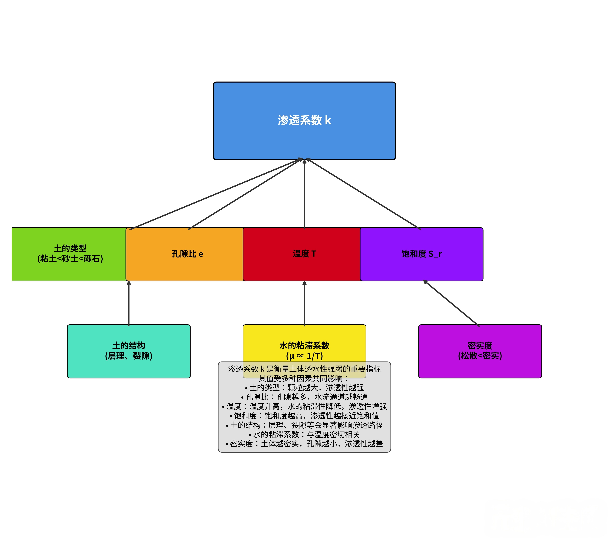
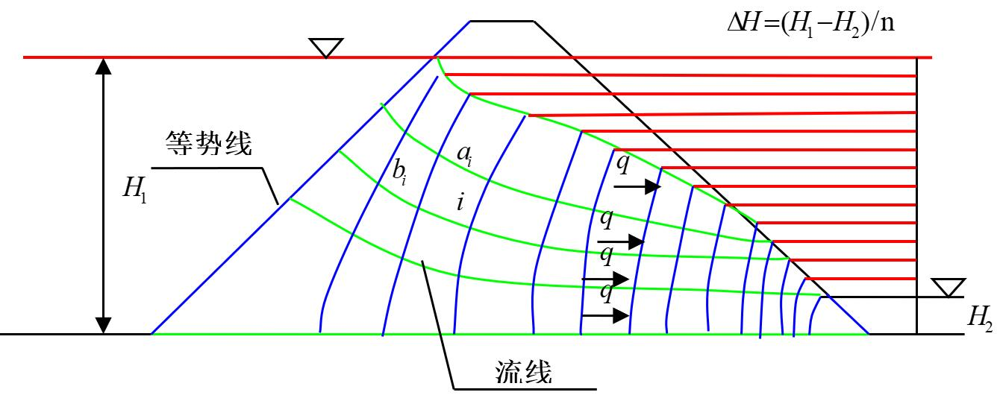
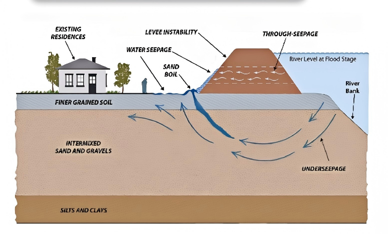

2.1 概述
土的渗透性是指水流过土中孔隙的难易程度，是土的重要工程性质之一。
2.1.1 渗透现象
水在重力或其他应力作用下，通过土中孔隙流动的现象称为渗透。
2.1.2 渗透性在工程中的意义
- 地下水位的升降和变化
- 基坑开挖中的排水和降水
- 堤坝和挡土墙的渗流稳定
- 地基的固结沉降
- 地下工程的防水和排水
2.2 达西定律
达西定律是描述水在多孔介质中渗流的基本规律。
2.2.1 达西试验
1856年，法国工程师达西通过试验研究了水流过砂土的规律，得出了渗流速度与水力梯度之间的线性关系。

图2.1 达西定律试验装置示意图
2.2.2 达西定律的表达式
达西定律可以表示为：
v = k·i
其中：
- v：渗流速度（m/s），即单位时间内通过单位面积的水量
- k：渗透系数（m/s），反映土的透水能力
- i：水力梯度，即沿渗流方向单位长度上的水头损失
2.2.3 达西定律的适用范围
达西定律适用于层流状态下的渗流，即雷诺数Re ≤ 1的情况。
Re = vd/ν
其中：
- d：土颗粒的有效粒径（m）
- ν：水的运动粘滞系数（m²/s）
注意
对于粗颗粒土（如砾石、卵石等），当水流速度较大时可能发生紊流，此时达西定律不再适用。
2.3 渗透系数的测定
2.3.1 实验室测定方法
实验室中测定渗透系数的方法主要有：
- 常水头试验：适用于渗透性较大的土（如砂土）
- 变水头试验：适用于渗透性较小的土（如黏性土）

图2.2 实验室渗透系数测定装置
2.3.2 常水头试验计算
常水头试验中渗透系数的计算公式：
k = QL / (Aht)
其中：
- Q：时间t内的渗水量（m³）
- L：渗流路径长度（m）
- A：试样的截面积（m²）
- h：水头差（m）
- t：时间（s）
2.3.3 变水头试验计算
变水头试验中渗透系数的计算公式：
k = 2.3aL / (A(t2-t1)) · lg(h1/h2)
其中：
- a：测压管的截面积（m²）
- L：渗流路径长度（m）
- A：试样的截面积（m²）
- t1, t2：时间（s）
- h1, h2：t1, t2时刻的水头差（m）
2.3.4 现场测定方法
现场测定渗透系数的方法主要有：
- 抽水试验
- 压水试验
- 注水试验
2.4 渗透系数的影响因素

图2.3 不同土类的渗透系数范围
2.4.1 土的性质影响
- 粒径大小与级配：颗粒越大，级配越好，渗透系数越大
- 孔隙比：孔隙比越大，渗透系数越大
- 矿物成分：黏性土中亲水矿物（如蒙脱石）含量越高，渗透系数越小
- 土的结构：絮状结构的黏性土渗透系数较小
2.4.2 水的性质影响
- 温度：水温越高，粘滞系数越小，渗透系数越大
- 水中杂质：水中溶解或悬浮的物质会影响渗透系数
k_T = k_20 · (ν_20 / ν_T)
其中：
- k_T：温度T时的渗透系数（m/s）
- k_20：温度20℃时的渗透系数（m/s）
- ν_20：20℃时水的运动粘滞系数（m²/s）
- ν_T：温度T时水的运动粘滞系数（m²/s）
2.5 二维渗流与流网
2.5.1 渗流的基本方程
对于各向同性的均质土，二维渗流的连续方程和运动方程：
∂²h/∂x² + ∂²h/∂y² = 0
这是拉普拉斯方程，表示稳定渗流条件下，水头分布必须满足的条件。
2.5.2 流网的概念
流网是由流线和等势线组成的网格系统：
- 流线：表示水流的路径，流线上任一点的切线方向与该点的渗流方向一致
- 等势线：连接水头相等的点的线，等势线上各点的测压管水头相同

图2.4 流网的基本结构示意图
2.5.3 流网的绘制
流网绘制的基本步骤：
- 确定渗流区域的边界条件
- 根据边界条件绘制初步的流线和等势线
- 检查流线与等势线是否正交，网格是否近似正方形
- 调整和修正，直到满足流网的基本条件
2.5.4 流网的应用
利用流网可以：
- 计算渗流量
- 确定渗流速度
- 分析渗透稳定性
- 计算渗透压力

图2.5 渗流过程中的渗透力作用示意图
知识拓展
在复杂的渗流问题中，也可以使用数值方法（如有限元法、有限差分法）求解渗流场。
本章小结
- 土的渗透性是指水流过土中孔隙的难易程度，用渗透系数k表示
- 达西定律描述了层流状态下渗流速度与水力梯度的线性关系
- 渗透系数可以通过室内试验（常水头、变水头）和现场试验测定
- 渗透系数受土的性质和水的性质等多种因素影响
- 流网是分析二维渗流问题的有效工具